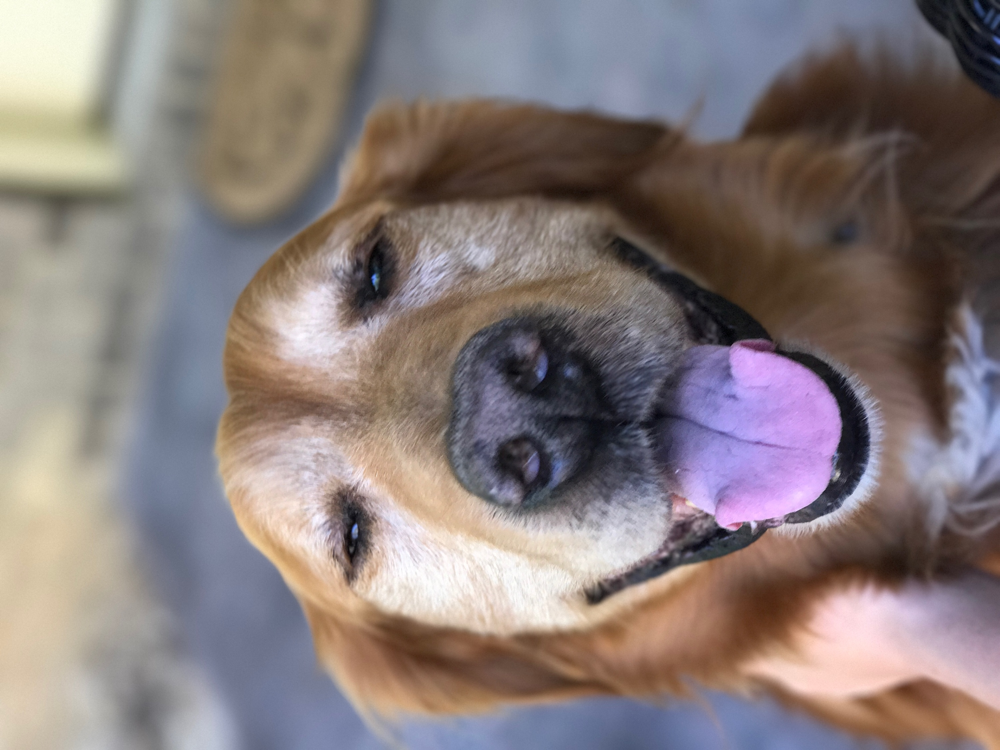

| Copper | Tiny |
|---|---|
| Golden Retriever | shih tzu-chihuahua mix |
I shared my story of the joy the dogs brought to my life in hopes to save others. There are plenty of dogs in need of a good home and you could be that home for them! There are many places here in Athens to adopt, the humane society, Petsmart, animal control, etc. So please look into it today!
A link to Athens Humane societyMore Pictures!!
